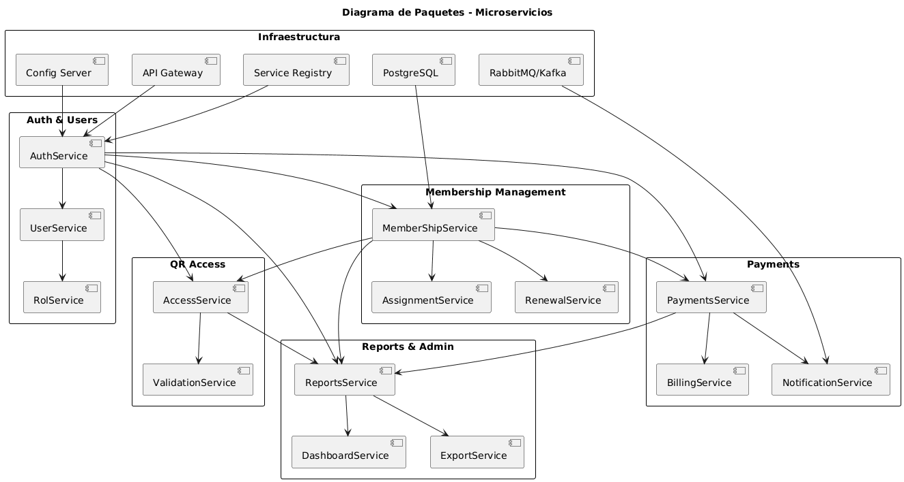
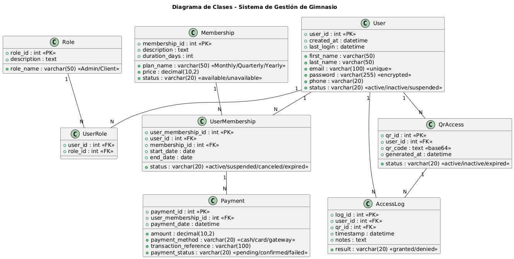
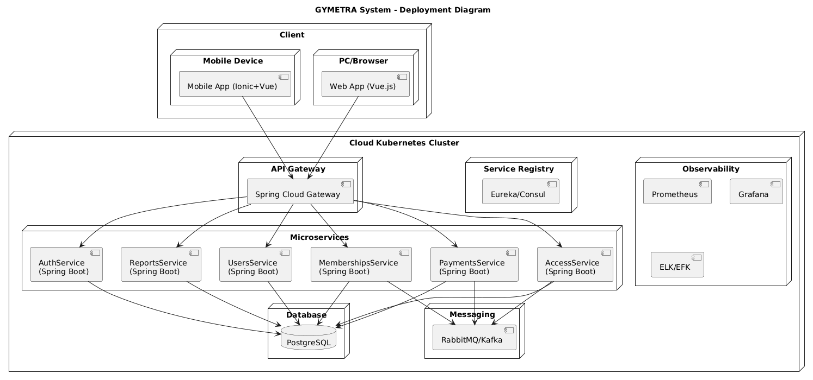
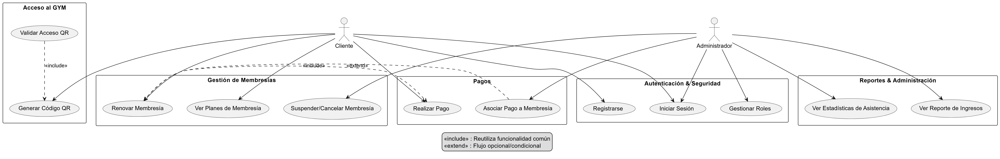
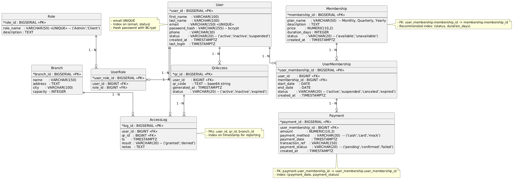

Package Diagram

PlantUML Source
@startuml
title Diagrama de Paquetes - Microservicios
skinparam packageStyle rectangle
skinparam package {
BackgroundColor White
BorderColor Black
FontStyle Bold
}
' =====================
' Infraestructura
' =====================
package "Infraestructura" {
[Service Registry]
[Config Server]
[API Gateway]
[RabbitMQ/Kafka]
[PostgreSQL]
}
' =====================
' Auth & Users
' =====================
package "Auth & Users" {
[AuthService]
[UserService]
[RolService]
[AuthService] --> [UserService]
[UserService] --> [RolService]
}
' =====================
' Membership Management
' =====================
package "Membership Management" {
[MemberShipService]
[AssignmentService]
[RenewalService]
[MemberShipService] --> [AssignmentService]
[MemberShipService] --> [RenewalService]
}
' =====================
' Payments
' =====================
package "Payments" {
[PaymentsService]
[BillingService]
[NotificationService]
[PaymentsService] --> [BillingService]
[PaymentsService] --> [NotificationService]
}
' =====================
' QR Access
' =====================
package "QR Access" {
[AccessService]
[ValidationService]
[AccessService] --> [ValidationService]
}
' =====================
' Reports & Admin
' =====================
package "Reports & Admin" {
[ReportsService]
[DashboardService]
[ExportService]
[ReportsService] --> [DashboardService]
[ReportsService] --> [ExportService]
}
' =====================
' Relaciones entre paquetes
' =====================
[Service Registry] --> [AuthService]
[Config Server] --> [AuthService]
[API Gateway] --> [AuthService]
[RabbitMQ/Kafka] --> [NotificationService]
[PostgreSQL] --> [MemberShipService]
[AuthService] --> [MemberShipService]
[AuthService] --> [PaymentsService]
[AuthService] --> [AccessService]
[MemberShipService] --> [PaymentsService]
[MemberShipService] --> [AccessService]
[AuthService] --> [ReportsService]
[MemberShipService] --> [ReportsService]
[PaymentsService] --> [ReportsService]
[AccessService] --> [ReportsService]
@enduml
Class Diagram

PlantUML Source
@startuml
title Diagrama de Clases - Sistema de Gestión de Gimnasio
' =====================
' Clase User
' =====================
class User {
+user_id : int <>
+first_name : varchar(50)
+last_name : varchar(50)
+email : varchar(100) <>
+password : varchar(255) <>
+phone : varchar(20)
+status : varchar(20) <>
+created_at : datetime
+last_login : datetime
}
' =====================
' Clase Role
' =====================
class Role {
+role_id : int <>
+role_name : varchar(50) <>
+description : text
}
' =====================
' Tabla intermedia UserRole (N:M)
' =====================
class UserRole {
+user_id : int <>
+role_id : int <>
}
' =====================
' Clase Membership
' =====================
class Membership {
+membership_id : int <>
+plan_name : varchar(50) <>
+description : text
+price : decimal(10,2)
+duration_days : int
+status : varchar(20) <>
}
' =====================
' Clase UserMembership
' =====================
class UserMembership {
+user_membership_id : int <>
+user_id : int <>
+membership_id : int <>
+start_date : date
+end_date : date
+status : varchar(20) <>
}
' =====================
' Clase Payment
' =====================
class Payment {
+payment_id : int <>
+user_membership_id : int <>
+amount : decimal(10,2)
+payment_method : varchar(20) <>
+payment_date : datetime
+transaction_reference : varchar(100)
+payment_status : varchar(20) <>
}
' =====================
' Clase QrAccess
' =====================
class QrAccess {
+qr_id : int <>
+user_id : int <>
+qr_code : text <>
+generated_at : datetime
+status : varchar(20) <>
}
' =====================
' Clase AccessLog
' =====================
class AccessLog {
+log_id : int <>
+user_id : int <>
+qr_id : int <>
+timestamp : datetime
+result : varchar(20) <>
+notes : text
}
' =====================
' Relaciones
' =====================
User "1" -- "N" UserRole
Role "1" -- "N" UserRole
User "1" -- "N" UserMembership
Membership "1" -- "N" UserMembership
UserMembership "1" -- "N" Payment
User "1" -- "N" QrAccess
QrAccess "1" -- "N" AccessLog
User "1" -- "N" AccessLog
@enduml
Sequence Diagram

PlantUML Source
@startuml
title GYMETRA Booking – Sequence Diagram
actor Client
boundary MobileApp as App
control Gateway
control AuthService
control MembershipsService
control PaymentsService
control AccessService
database PostgreSQL
== Registration/Login ==
Client -> App : Enter credentials
App -> Gateway : POST /auth/login
Gateway -> AuthService : validateCredentials()
AuthService -> PostgreSQL : query user
AuthService --> Gateway : JWT Token
Gateway --> App : JWT Token
== Membership Renewal ==
Client -> App : Select renew plan
App -> Gateway : POST /membership/renew (JWT)
Gateway -> MembershipsService : renewMembership()
MembershipsService -> PaymentsService : createPaymentOrder()
PaymentsService -> PaymentGateway : processPayment()
PaymentGateway --> PaymentsService : confirmation
PaymentsService -> PostgreSQL : register payment
PaymentsService -> MembershipsService : event payment-confirmed
MembershipsService -> PostgreSQL : update validity
MembershipsService --> Gateway : OK
Gateway --> App : Membership renewed ✅
== QR Access ==
Client -> App : Generate QR code
App -> Gateway : GET /access/validate (QR)
Gateway -> AccessService : validateAccess(QR, JWT)
AccessService -> AuthService : verify user
AccessService -> MembershipsService : verify active membership
AccessService -> PostgreSQL : register access
AccessService --> Gateway : access granted
Gateway --> App : access allowed 🚪
@enduml
Deployment Diagram

PlantUML Source
@startuml
title GYMETRA System – Deployment Diagram
node "Client" {
node "Mobile Device" {
component "Mobile App (Ionic+Vue)" as MobileApp
}
node "PC/Browser" {
component "Web App (Vue.js)" as WebApp
}
}
node "Cloud Kubernetes Cluster" {
node "API Gateway" {
component "Spring Cloud Gateway"
}
node "Service Registry" {
component "Eureka/Consul"
}
node "Microservices" {
component "AuthService\n(Spring Boot)" as Auth
component "UsersService\n(Spring Boot)" as Users
component "MembershipsService\n(Spring Boot)" as Memberships
component "PaymentsService\n(Spring Boot)" as Payments
component "AccessService\n(Spring Boot)" as Access
component "ReportsService\n(Spring Boot)" as Reports
}
node "Messaging" {
component "RabbitMQ/Kafka"
}
node "Database" {
database "PostgreSQL"
}
node "Observability" {
component "Prometheus"
component "Grafana"
component "ELK/EFK"
}
}
MobileApp --> "Spring Cloud Gateway"
WebApp --> "Spring Cloud Gateway"
"Spring Cloud Gateway" --> Auth
"Spring Cloud Gateway" --> Users
"Spring Cloud Gateway" --> Memberships
"Spring Cloud Gateway" --> Payments
"Spring Cloud Gateway" --> Access
"Spring Cloud Gateway" --> Reports
Auth --> "PostgreSQL"
Users --> "PostgreSQL"
Memberships --> "PostgreSQL"
Payments --> "PostgreSQL"
Access --> "PostgreSQL"
Reports --> "PostgreSQL"
Payments --> "RabbitMQ/Kafka"
Access --> "RabbitMQ/Kafka"
Memberships --> "RabbitMQ/Kafka"
@enduml
Use Case Diagram

PlantUML Source
@startuml
title GYMETRA System – Use Case Diagram
actor "Cliente" as Cliente
actor "Administrador" as Admin
rectangle "Sistema Membresías GYM" {
' --- Casos de uso del Cliente ---
usecase "Registrarse" as UC1
usecase "Iniciar Sesión" as UC2
usecase "Ver Planes de Membresía" as UC3
usecase "Renovar Membresía" as UC4
usecase "Realizar Pago" as UC5
usecase "Ingresar con Código QR" as UC6
usecase "Consultar Historial de Asistencias" as UC7
usecase "Consultar Vigencia de Membresía" as UC8
' --- Casos de uso del Administrador ---
usecase "Gestionar Membresías (crear, suspender, renovar)" as UC9
usecase "Ver Reporte de Ingresos" as UC10
usecase "Ver Estadísticas de Asistencia" as UC11
}
' Relaciones Cliente
Cliente --> UC1
Cliente --> UC2
Cliente --> UC3
Cliente --> UC4
Cliente --> UC5
Cliente --> UC6
Cliente --> UC7
Cliente --> UC8
' Relaciones Administrador
Admin --> UC9
Admin --> UC10
Admin --> UC11
@enduml
ER Diagram Database

PlantUML Source
@startuml
'===============================================================================
' Modelo ER inicial (PostgreSQL) - Sistema Membresías del GYM
' Organización por dominios: Usuarios/Roles | Membresías/Pagos | Accesos/Logs
'===============================================================================
hide circle
skinparam linetype ortho
skinparam classAttributeIconSize 0
'===============================================================================
' ENTIDADES: USUARIOS Y ROLES
'===============================================================================
entity "User" as User {
* user_id : BIGSERIAL <>
--
first_name : VARCHAR(100)
last_name : VARCHAR(100)
email : VARCHAR(150) <>
password_hash : VARCHAR(255) -- bcrypt
phone : VARCHAR(30)
status : VARCHAR(20) -- ('active','inactive','suspended')
created_at : TIMESTAMPTZ
last_login : TIMESTAMPTZ
}
entity "Role" as Role {
* role_id : BIGSERIAL <>
--
role_name : VARCHAR(50) <> -- ('Admin','Client')
description : TEXT
}
entity "UserRole" as UserRole {
* user_role_id : BIGSERIAL <>
--
user_id : BIGINT <>
role_id : BIGINT <>
}
'===============================================================================
' ENTIDADES: MEMBRESÍAS Y PAGOS
'===============================================================================
entity "Membership" as Membership {
* membership_id : BIGSERIAL <>
--
plan_name : VARCHAR(50) -- Monthly, Quarterly, Yearly
description : TEXT
price : NUMERIC(10,2)
duration_days : INTEGER
status : VARCHAR(20) -- ('available','unavailable')
created_at : TIMESTAMPTZ
}
entity "UserMembership" as UserMembership {
* user_membership_id : BIGSERIAL <>
--
user_id : BIGINT <>
membership_id : BIGINT <>
start_date : DATE
end_date : DATE
status : VARCHAR(20) -- ('active','suspended','canceled','expired')
created_at : TIMESTAMPTZ
}
entity "Payment" as Payment {
* payment_id : BIGSERIAL <>
--
user_membership_id : BIGINT <>
amount : NUMERIC(10,2)
payment_method : VARCHAR(30) -- ('cash','card','mock')
payment_date : TIMESTAMPTZ
transaction_ref : VARCHAR(150)
payment_status : VARCHAR(20) -- ('pending','confirmed','failed')
created_at : TIMESTAMPTZ
}
'===============================================================================
' ENTIDADES: ACCESO Y LOGS
'===============================================================================
entity "QrAccess" as QrAccess {
* qr_id : BIGSERIAL <>
--
user_id : BIGINT <>
qr_code : TEXT -- base64 string
generated_at : TIMESTAMPTZ
status : VARCHAR(20) -- ('active','inactive','expired')
}
entity "AccessLog" as AccessLog {
* log_id : BIGSERIAL <>
--
user_id : BIGINT <>
qr_id : BIGINT <>
ts : TIMESTAMPTZ
result : VARCHAR(20) -- ('granted','denied')
notes : TEXT
}
entity "Branch" as Branch {
* branch_id : BIGSERIAL <>
--
name : VARCHAR(150)
address : TEXT
city : VARCHAR(100)
capacity : INTEGER
}
'===============================================================================
' RELACIONES ENTRE ENTIDADES
'===============================================================================
' Usuarios y Roles
User ||--o{ UserRole : "1 - N"
Role ||--o{ UserRole : "1 - N"
' Membresías y pagos
User ||--o{ UserMembership : "1 - N"
Membership ||--o{ UserMembership : "1 - N"
UserMembership ||--o{ Payment : "1 - N"
' Accesos
User ||--o{ QrAccess : "1 - N"
QrAccess ||--o{ AccessLog : "1 - N"
User ||--o{ AccessLog : "1 - N"
Branch ||--o{ AccessLog : "1 - N"
'===============================================================================
' NOTAS DE IMPLEMENTACIÓN EN POSTGRESQL
'===============================================================================
note left of User
- email UNIQUE
- Index on (email, status)
- Hash password with BCrypt
end note
note right of Membership
- FK: user_membership.membership_id -> membership.membership_id
- Recommended index: (status, duration_days)
end note
note bottom of Payment
- FK: payment.user_membership_id -> user_membership.user_membership_id
- Index: (payment_date, payment_status)
end note
note right of AccessLog
- FKs: user_id, qr_id, branch_id
- Index on timestamp for reporting
end note
@enduml